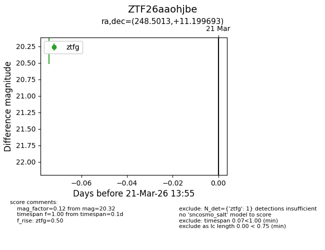
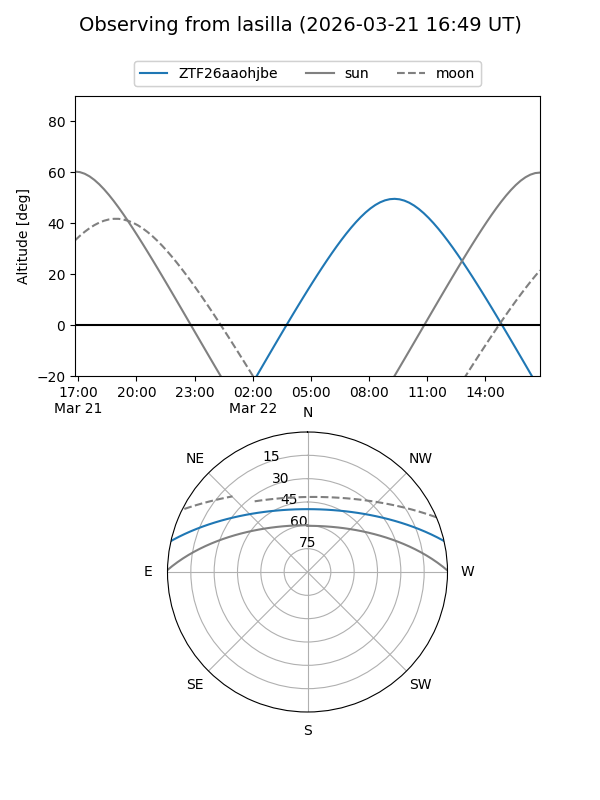
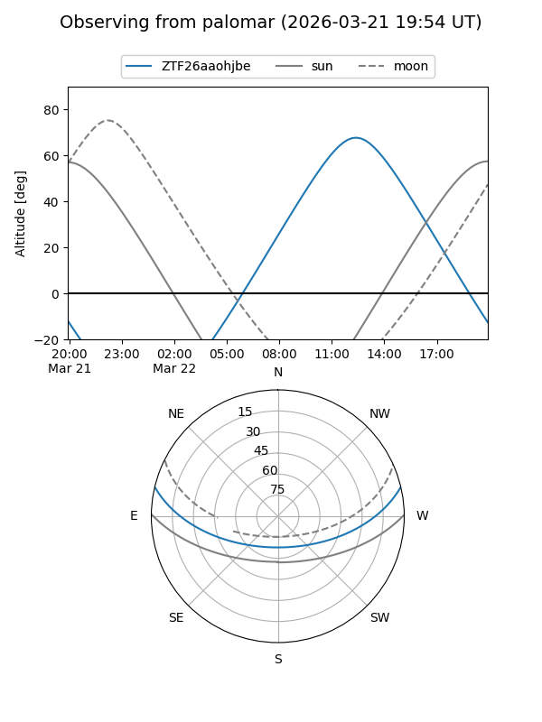

ZTF26aaohjbe
Target ZTF26aaohjbe at 2026-03-21 13:57
Aliases and brokers:
FINK: link
Lasair: link
ALeRCE: link
alt names
ZTF26aaohjbe (ztf,fink_ztf)
Coordinates:
equatorial (ra, dec) = 248.5013,+11.19969
equatorial (HMS+DMS) = 16:34:00.31,+11:11:58.90
galactic (l, b) = (27.3195,+35.54048)
Flags:
Photometry:
last ztfg=20.32
1 ztfg detections
Lightcurve

Visibility


Additional plots